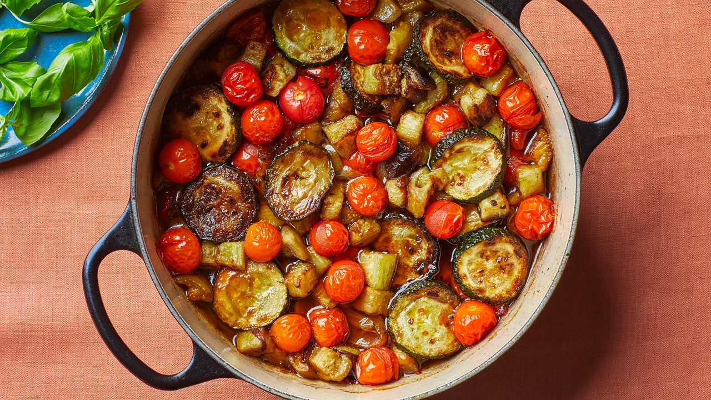

Ratatouille

Despite what told Pixar, we don't use the "rat" in "ratatouille" for this recipe.
Ingredients
- 2 Eggplants
- 4 Zuchini
- 2 onions
- 6 Tomatoes
- Garlic
- Olive Oil
- Salt
- Provence Herbs
- Bay Leaves
Instructions
- Preheat the oven to 180°C.
- Cut the eggplants, zuchinis, onions and tomatoes in thin slices.
- In a pot, put some olive oil, then add the onions and garlic, cook for 5 minutes.
- Add the tomatoes, salt, herbs and bay leaves, cook for 10 minutes.
- Pinch the veggetables with a fork to check if they are cooked, let them cook for a few more minutes if they are not
- et voila! It just a boiled veggetables side die, tbh. Best served with a nice piece of meat.
Enjoy your ratatouille!
Back to homepage